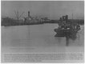
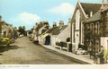
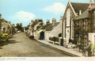
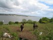
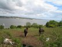
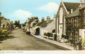
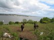
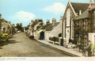
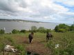
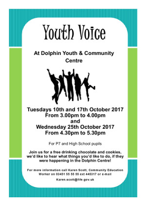

 

 





ParkLives Dundee
Leisure and Culture Dundee, working in partnership with Dundee City Council, have teamed up with Coca-Cola Great Britain to bring the ParkLives programme to Dundee. ParkLives is a FREE and easy way for you to get the best out of your local park, with activities for all ages & abilities.
To find out what activities are running throughout the winter, please click parklives
Our 2018 programme will kick off in April, please like our Facebook Page ‘Parklives Dundee’ to keep up to date with latest news!
Tayview Medical Practice Newsletter
Exciting News From The Tayport Scout Group
TCC Minutes of 6th November 2017
Information on bus service during road closure.
The 37th Fife (1st Tayport) Scout Group are pleased to announce the formation of a new Scout Troop.
Commencing on Monday 15th January 2018, the new Scout Troop is open to all young persons between 10 1/2 - 14 years of age.
Make new friends; have fun; learn exciting things. Scouting is all about enjoying yourself - and there will always be plenty to do!
Register your interest now by email or Facebook.
See poster for details.
Tim Brett’s Report
Tayport Community Council Meeting - Monday 6 November 2017 TCC Minutes of 2nd October 2017 Night time buses from 1900 hours unlimited travel throughout fife and dundee for £2 Tayport Scout Troop: Creation of New Scout Troop In Tayport TCC Minutes of 4th September 2017 A young person consultation is taking place in Tayport during the October school holidays and the first week of the new term. The Community Council has restablished the Citizen of the Year and the first well deserved recipient, voted for by the people of Tayport, is Mr Jim Kinnear who has served the community for over 40 years. The Community Council also commended Mr Irvine Rae recognising his prestigious award of the Legion D'honeour. A young swimmer Dylan Thorburn was also recognised for his gold and silver medals at the 20017 special olympics.
Tim Brett' CC meeting report of 4th September 2017 What Next For Cubs And Brownies? The Leaders of our respective Brownies and Cub Scouts have long recognised that we have been over reliant on our neighbouring Guides and Scout troops to support the young people of Tayport in the 10-14 year age group. It is planned to hold a meeting on Monday 25th September in the Scout Hall at 7.30pm to explore forming a Scout troop in Tayport. We would welcome parents or anyone with a interest in this community initiative to attend. Why a scout troop? The Scouts are the only uniform group that welcomes both girls and boys and allows us to pool resources to provide an outlet for our young people. It will allow those moving on from the Brownies and Cubs to the next stage of their adventure. Please join us on Monday 25th September or if you can't join us we would welcome your input either by email or on our respective Facebook pages. Tayport man Irvine Rae receives Legion d’honneour (Dundee Courier) Fife D-Day veteran awarded the French Légion d’honneur Tayport – Ferryport on Craig Community Council Citizen of the year award 2017 Derek Gray to Tayport Community Council I am pleased to report that 20 local residents (including some representing local groups/organisations) plus our three Councillors and officers from Fife Council, attended the meeting to discuss interest in setting up a working group to explore the future of the Burgh Chambers and Gregory Hall. Lots of very relevant questions were asked and the outcome was that ten people have signed up to be part of the working group which will have its first meeting on either Tuesday 19th or Tuesday 26th September 2017 (date to be confirmed), 7.00pm at the Burgh Chambers. If anyone else would wish to join the working group, please contact me so I can advise which date is finally agreed – dek.gray@gmail.com, tel 07539 932018 I expect an early priority of the working group will be to identify how best to keep the community updated on the progress it is making. Thank you to everyone for their interest and contributions and to Janice Laird, Fife Council’s Community Manager for North East Fife Area for her input. Derek Gray Leuchars Station Car Park Extension Leuchars train station car park extension is now open…£1 per day. You can put upto 7 days (£7) for a weekly ticket any longer and you have to call ringo Kids travel For 20 pence across Dundee Area including Tayport The travel offer is to adults with children and young persons to travel for 20pence. Available across all buses including Stagecoach, Moffat and Williamson, Dundee Explorer. A great wet weather alternative – Join the Library Joining the library is absolutely free, and kids can join at any age, even from birth! We have lots ON for kids at your local library, including:
Summer Reading Challenge at Tayport Library Tim Brett's Tayport CC monthly report Councillor Tim Brett – Councillor for the Taybridgehead Ward Tentsmuir National Nature Reserve Newsletter Reserve-Newsletter-No-37–June-2017 TCC AGM Minutes of 15th May 2017 TCC Minutes for 3rd April 2017
http://www.fifetoday.co.uk/news/cut-price-ticket-deal-for-night-time-buses-1-4585384
We are now in a position to look at the refurbishment of the exterior of the Scout Hall. This will allow us to improve the facilities we provide as well as allowing us to develop new services. It is important that the community has a say in how we take this forward and we would be grateful if you would take a few minutes to complete the attached survey. This should take no longer than 2 minutes to complete.
https://www.surveymonkey.co.uk/r/8WBJZWY




the CATT Christian Unity Service this year is at St Margaret's, Sunday 28th January, 6pm. Tea and coffee and calorie rich baking thereafter.
This is a great place to advertise upcoming community events. If you know of a future event that you would like to see listed here please get in touch.
{kind=link}
{kind=link}
{kind=link}
{kind=link}
{kind=link}